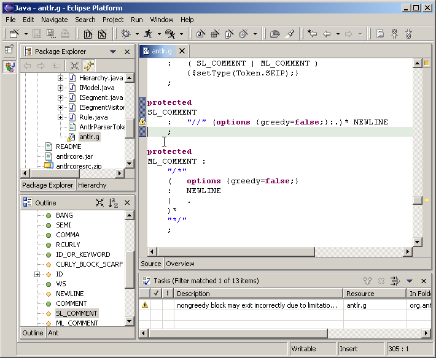
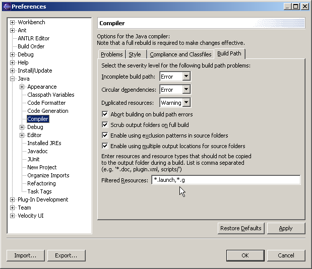
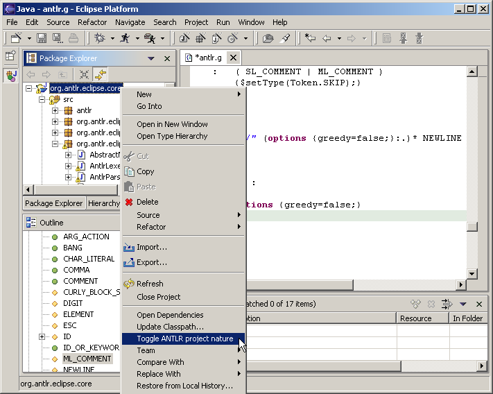
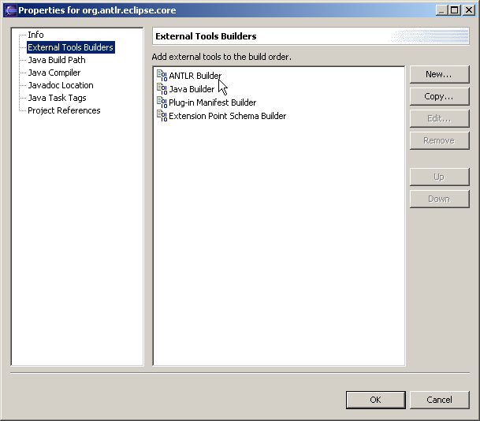

ANTXR plugin for Eclipse
This project leverages the
Eclipse platform
(v2.1) by adding support for the parser generator
ANTXR.
It provides the following plugins:
- org.antxr
- ANTXR 2.7.2 (final) library
- com.javadude.antxr.doc
- ANTXR 2.7.2 (final) documentation
- com.javadude.antxr.eclipse.core
- ANTXR project nature with builder
- com.javadude.antxr.eclipse.ui
- ANTXR-aware text editor (associated to files with extension '*.g')

Features
- Project nature with builder for ANTXR grammar files
- Problem markers for errors and warnings in grammar files
- ANTXR-aware multi-page text editor with syntax highlight
- Additional editor page with overview of ANTXR grammar (only terminals and
non-terminals are displayed)
-> Screenshot
- Outline view which shows sections of ANTXR grammar files
- Action in navigator context menu to compile ANTXR grammar files manually
- Action in navigator context menu to add/remove ANTXR project nature
to/from the currently selected project
- Menu item 'Go to Rule' (available in workbench's navigate menu and editor's
context menu) for navigating to definition of rule under cursor
(keyboard shortcut 'F3' or context menu)
-> Screenshot
Use Workbench's navigation history to return to previous location
(keyboard shortcut 'Alt + Arrow Left').
- Annotation hover for errors (Screenshot)
- Text annotations for rules (first 10 lines of the rule's source code)
-> Screenshot
- Commenting and uncommenting text (Ctrl+/ and Ctrl+\)
- Content assist for rules (Ctrl+Space)
-> Screenshot
- Leverage customizable keybinding facility of Eclipse 2.1
- Preferences page for editor's syntax highlight
(Screenshot)
- Resource label decoration of ANTXR generated files with name of according
grammar file (Screenshot)
- property page for grammar files which allows to specify an alternate output
path (option '-o') and optional super grammars (option '-glib')
-> Screenshot
- property page for generated files which displays the related grammar file
(Screenshot)
Installation
Via Eclipse Update Manager
Online updates are available on
http://antxreclipse.sourceforge.net/updates/.
Define a site bookmark in Eclipse's Update Manager view
(Screenshot), navigate to the update site via this
bookmark (Screenshot) and install the ANTXR UI feature.
This update site can also be downloaded from
SourceForge
and used locally.
Manually
Download the archives org.antxr_x.x.x.zip, (optionally) com.javadude.antxr.doc_x.x.x.zip,
com.javadude.antxr.eclipse.core_x.x.x.zip and com.javadude.antxr.eclipse.ui_x.x.x.zip from
here
and unzip them in your Eclipse plugin directory "<eclipse install path>/plugins/".
Usage
To keep Eclipse from copying ANTXR grammar files to the output folder during build
you have to add an additional entry ("*.g") to the resource filter in the Java
compiler preferences.

To add/remove the ANTXR project nature to/from a project select a project in Eclipse's
navigator view and select from the context menu 'Toggle ANTXR project nature'.

You can verify if the project nature is added by examining in the project's properties the
list 'External Tool Builders'. Here appears our builder as 'ANTXR Builder'.

If your project is built then this builder automatically starts the ANTXR parser generator for
every modified grammar file.

{kind=link}
{kind=link}
{kind=link}
{kind=link}
{kind=link}
{kind=link}
{kind=link}
{kind=link}
{kind=link}